Trust信頼
私たちは、倫理的な姿勢で企業経営に取り組みます。ご要望や業務に真摯に向き合い、ステークホルダーが安心して、スタートアップポップコーンと繋がり続けられる企業づくりを目指します。
Our Philosophy
認定講師制度は、当社のMissionである「明日が楽しみで眠れない社会」の実現のために運営を行っております。私たちの想いをご理解いただいた上で、一緒にアントレプレナーシップ教育を届けていく。そんな仲間を募集いたします。
※M.V.Vにご共感いただけない方は認定講師への応募はお控えください。
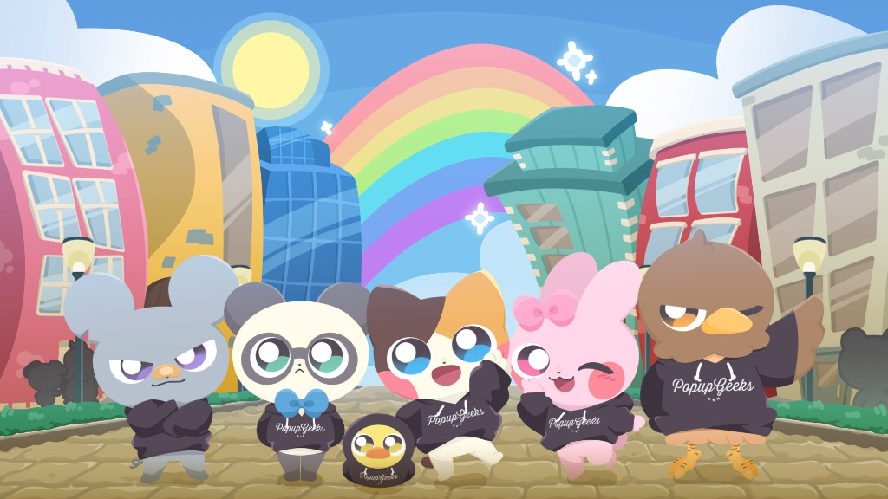
子どもの頃に体験した「遠足の前の日の夜に楽しみで眠れなくなる」いつもそんな気持ちで明日を迎えることが出来たらとても素敵な人生で、それはとても豊かな社会だと思っています。みんなの毎日の「行ってきます」がワクワク感に溢れるように、スタートアップポップコーンは事業を通して明日が楽しみで眠れない社会の実現を目指します。
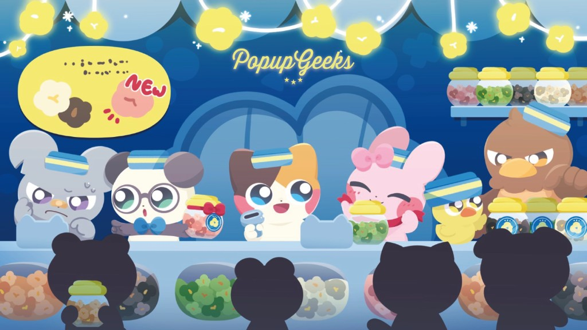
私たちが仕事を通して関わる方々の「明日が楽しみになるモノやコト」を生み出し、提供し続け、その働きによってまずお客様が満たされることで自分自身も満たされ、その２つの満たされた心とエナジーが拡がることで社会が豊かになると捉えています。
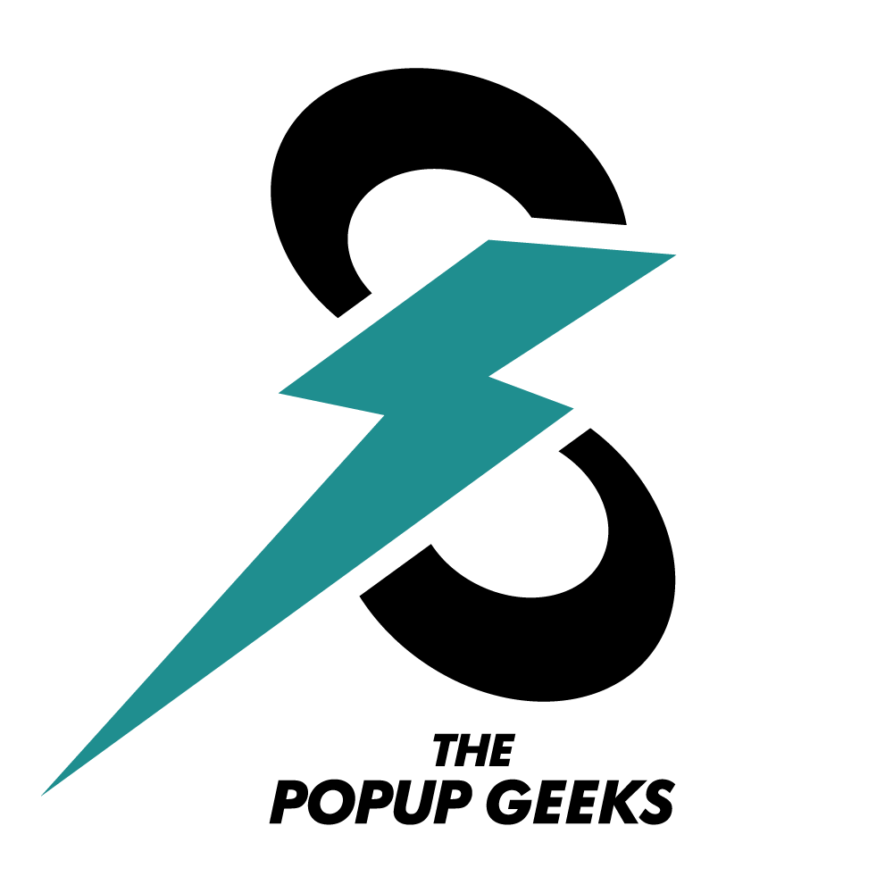
関わる人がワクワクで明日が楽しみになる機会を提供する私たちやステークホルダーをPopup Geeks「新しいワクワクを生み出す専門家」と呼んでいます。
早期から起業やビジネスに興味を持ち、深めることで物事の本質的な価値を考えるようになり、それにより仕事や人生がもっと楽しくなります。私たちはアントレプレナーシップ教育事業で将来に希望を持った人財を輩出し、共に楽しみで眠れない社会の実現を目指します。
日本国内47都道府県全てのエリアで楽しく学べるゲーム教材で行う小中高生のアントレプレナーシップ教育プログラムの展開を目指しています。様々なステークホルダーと共に明日が楽しみで眠れない社会を実現します。
企業は社会をより良く変革するための最良のプラットフォームであると捉え、正しい価値基準と行動をもって社会に良い影響を及ぼし、全てのステークホルダーから信頼され、必要とされる企業を目指します。
私たちは、倫理的な姿勢で企業経営に取り組みます。ご要望や業務に真摯に向き合い、ステークホルダーが安心して、スタートアップポップコーンと繋がり続けられる企業づくりを目指します。
付加価値の高いサービスを提供することで、関わる方々の未来が明るく楽しくなる体験価値を創造します。常に更なる価値創造のための追求・挑戦を繰り返し、価値ある体験を提供し続けます。
持続的な成長を追求し、納税や雇用を通じて社会に還元します。売上や利益の向上はミッション実現に向けての達成度、社員一人ひとりの人間性・能力の向上度と捉え、企業とスタッフの成長を通して、社会的インパクトのある企業づくりを行います。
多様なステークホルダーと共に新たな価値を創造します。共創を通じて更に社会にポジティブな影響を及ぼすことを目指し、その可能性を最大化するアクションの追求と実行を続けます。
アントレプレナーシップをくすぐるストーリー
ここはスタートアップシティ。個性あふれる6人の仲間たちがナオト市長から直々の依頼を受け市長室へ向かった。緊張した空気の中、市長が発した言葉は「この街を活気づけるためにカフェをオープンさせてほしい」そんな市長の突然のお願いを６人は引き受けることになった。
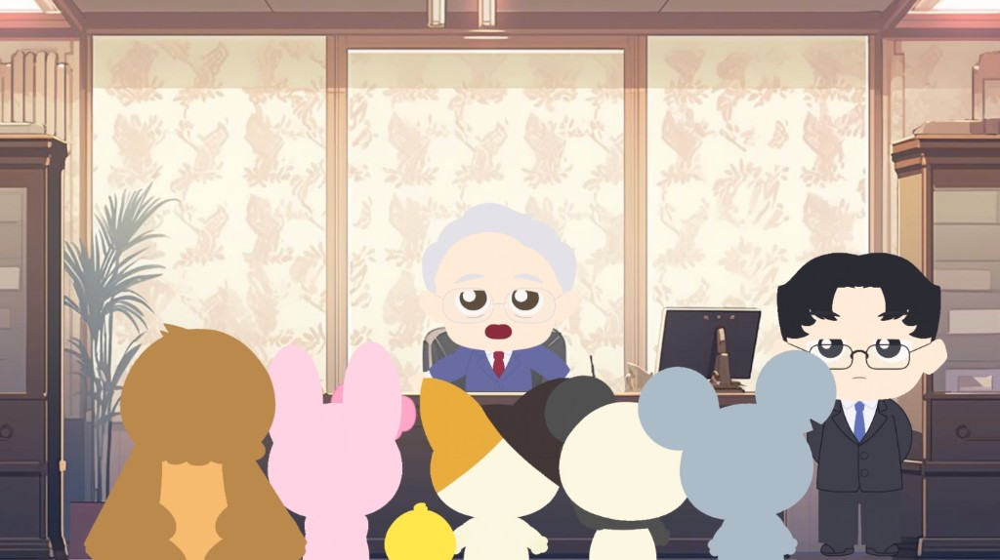
街を盛り上げるためにカフェをオープンしたい６人。シード区／アーリー区／レイター区の３エリアから最適な出店先を見つけるため、街に隠れた謎を解こう！
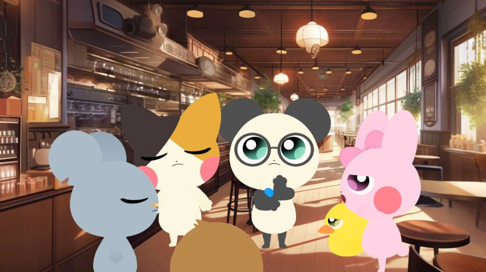
開店後は賑わったが、大手モールの進出で客足が離れた。課題を解き、他社と共存するために自分達にしかできない独自性を見つけよう！
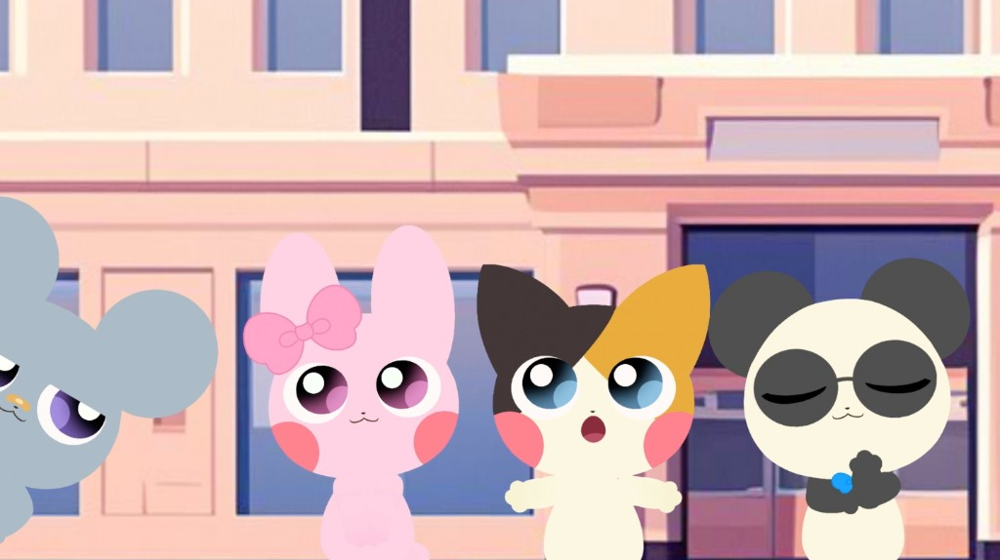
独自サービスを開発したが、まだ賑わいが戻らない。自分達のカフェにピッタリの客層があるはずだ！新たな問題を解きターゲットを導き出そう！
実施時間
90分
1グループ
3名〜5名
起業に興味のない子でも
参加しやすい
元々起業に興味がなかった人の94%が起業に興味があるに変化！
起業に興味がなかった子でも参加しやすく、プログラムの後に興味を持つ割合が94％となっており、起業無関心層が参加しやすいプログラムになっています。参加者からは「謎解きをしながら起業を学べたのは楽しく、さらに起業に興味がでた」「失敗があるからこそ改善点を見つけられて成長できるので失敗を恐れずに挑戦したいと思いました」「今まで参加したアントレプレナーシップのイベントよりも楽しく気軽に取り組めてとてもよかった」等の感想をいただいており、謎解きゲームを通して、起業に興味を持ち、失敗を恐れず自分に自信を持つことができるようになります。
| 起業に関心がある人の参加しやすさ | 起業に無関心な人の参加しやすさ | 興味がない人が起業に興味を持ちやすさ | 備考 | |
|---|---|---|---|---|
| 起業家による講演会 | ○ | × | × | 無関心者にとって興味の対象にならない |
| セミナー＆ワークショップ | ○ | × | △ | 無関心者にとって興味の対象にならない |
| 謎解きゲーム | ○ | ○ | ○ | 起業に興味がない子でも参加しやすい |
＊作成：スタートアップポップコーン株式会社
＊作成：スタートアップポップコーン株式会社
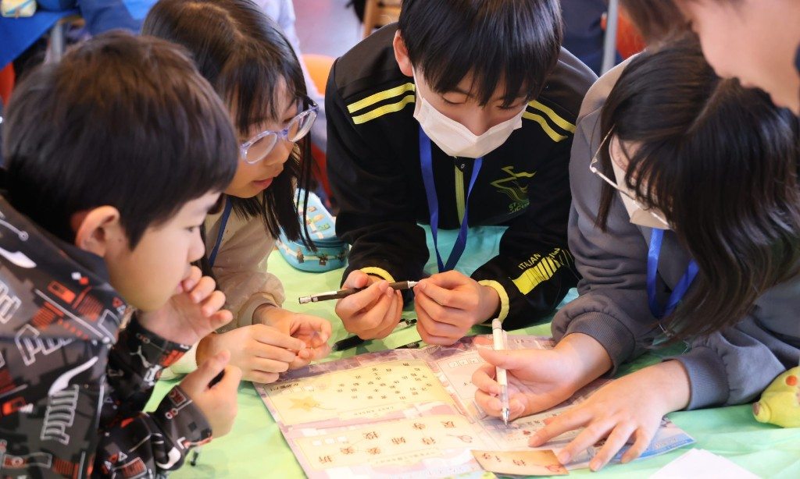
経済活動が街や人々の暮らしにどう影響するのか。ゲームを通じて経済と社会のつながりを実感できます。また、起業した主人公たちが街を、社会を変革していくことをストーリーで学べます。自分だけのアイデアで社会を変えられる可能性を体感できます。
チャレンジして失敗しても、それは成長につながります。ゲームの中で何度も試行錯誤を重ねる体験を通じて、成長はその後の人生で成功に繋がっていくことを理解することができます。失敗を恐れずに挑戦する心が、将来の力になることを学べます。
北海道大学にて開催したプログラム
更なる発展を目指す街"スタートアップシティ"のナオト市長から直々の依頼を受け、新たなお店をオープン！最初は賑わいを見せたお店も大手ショッピングモールの登場により客足がいっきに離れていっちゃった。一時の活気を取り戻すために課題となる謎を解き、お店の発展を目指せ！
主催：北海道大学 産学・地域協働推進機構
教育現場・出版・メディアに広がる「アントレプレナーシップ教育」への共感
当社のアントレプレナーシップ教育への取り組みは、行政、教育機関、出版、メディアなど多方面から注目を集めています。

自治体のキャリア教育事業として、小学校・中学校・高等学校での採用実績があります。
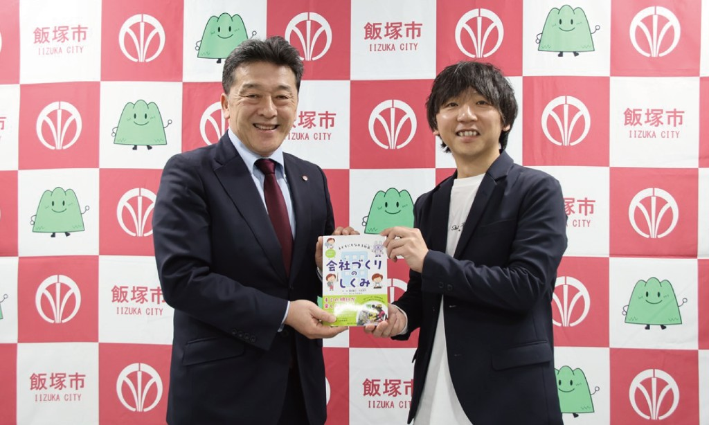
「子どもにもなれる社長 いますぐ知りたい会社づくりのしくみ」を監修し、全国で出版されています。
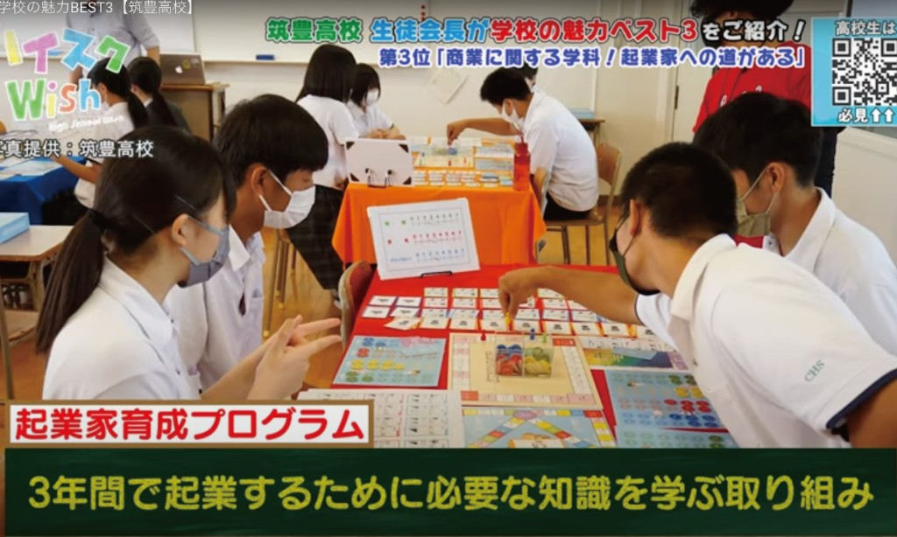
新しい学びの形として、テレビ・新聞・WEBメディアなどで多数紹介されています。
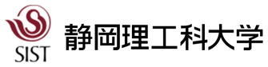
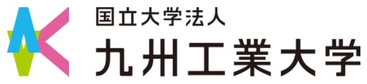
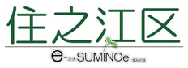
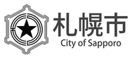
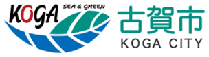
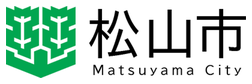
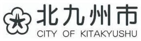
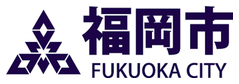
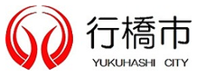
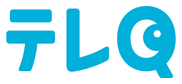
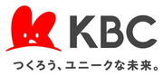
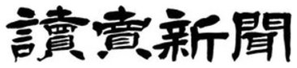
当社が独自開発したリアル謎解きゲーム「輝く未来を描け！スタートアップシティからの挑戦状」の教材をご活用いただき、全国各地へアントレプレナーシップ教育を展開してくださる「認定講師」を募集します。
認定講師養成講座を受講し、認定講師になることで、本教材を用いたワークショップを主催・開催することができます。
本教材のファシリテーションでは、スムーズな進行と正しいメッセージの発信が求められます。参加者に意図した学びを届けるため、認定講師には適切なファシリテーションスキルが重要です。
認定講師になったあとも継続的に話し合い、常に変化する最新情報を共有し研鑽しあうことで研修クオリティを向上させ続ける形をとっています。
認定講師養成講座は、下記3点を満たしている方を対象に実施しております。
「明日が楽しみで眠れない社会」の実現というMissionをはじめ、当社のミッション・ビジョン・バリューにご共感いただける方を募集しています。同じ志を持って、アントレプレナーシップ教育を届けていける仲間を求めています。
全国各地で子どもたちにアントレプレナーシップ教育を届けたいという想い、参加者の学びと成長を支えたいという情熱を持っている方を歓迎します。共に社会をより良く変革していく仲間を募集しています。
スムーズな進行と正しいメッセージの発信が求められる本教材において、参加者に意図した学びを届けるためのファシリテーションスキルを身につけ、実践できる方、またはその意欲のある方を対象としています。
認定講師養成講座は大きく以下の3つのパートから成り立っています。オンラインで2時間30分で実施いたします。
開催日程は随時募集中です。1名様より催行いたします。
謎解きゲームの構成、各エピソードのねらい、参加者に伝えるポイントなどを学びます。
権利・義務、実施時のルール、コミュニティでの活動について理解を深めます。
実際のワークショップ運営を想定した演習を通じて、実践的なスキルを身につけます。
盛りだくさんの内容になっておりますが、本養成講座受講後には、謎解きキットをお渡しするとともに、本教材を活用したワークショップを開催いただくことが可能です。
認定講師養成講座の受講料は、以下の2パターンをご用意しております。
受講料：110,000円（税込）
※有料での実施はできません。
受講料：220,000円（税込） → 198,000円（税込） ディスカウント価格
※金額・条件は変更となる場合がございます。詳細はお問い合わせください。
1989年の時価総額ランキングでは、上位10社の中に日本法人が7社ランクインしており、急速な経済発展を成した日本の姿が伺えました。しかし、その30年後の2019年では米国のGAFA、中国のBATHが上位に名を連ねるように変化しました。日本法人がランキングしている順位まで遡ると42位のトヨタ自動車となり、世界での競争力は低下しております。
1970年以降に創業した企業や30年前には存在しなかった企業が世界でトップクラスにランクインされる様になった時代背景を鑑みると、日本が再度世界の中でトップクラスにランクインするためには、国内の教育においてアントレプレナーシップ（起業家精神）を育み、新しい観点でサービスを作り上げる力やチャレンジ精神・探究心が必要だと考えております。
日本の開業率（国際比較）は2018年度で4.4%であり、諸外国に比べて低い状況にあり、トップのフランス13.2%に比べると半数以上も下回っています。（出所：中小企業白書2019）
そのような背景から、将来について検討する年代（小中学生～大学生）へのアントレプレナーシップ教育の導入は必要不可欠とされ、今後の日本の未来を担う人材へ必要な教育・体験を行っていくことは社会課題のひとつであると捉えることができます。
謎解き教材「スタートアップシティからの挑戦状」を活用して、今後の日本を支える未来の起業家を一緒に育みましょう。
認定講師養成講座へのお申し込み、またはご質問はこちらからお気軽にご連絡ください。
まずは体験会へのご参加をおすすめいたします。体験会の開催情報はnazotokiサイトまたはスタートアップポップコーンまでお問い合わせください。